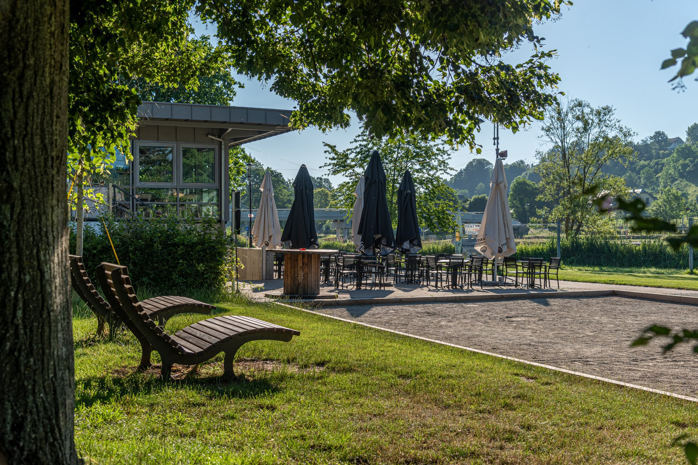
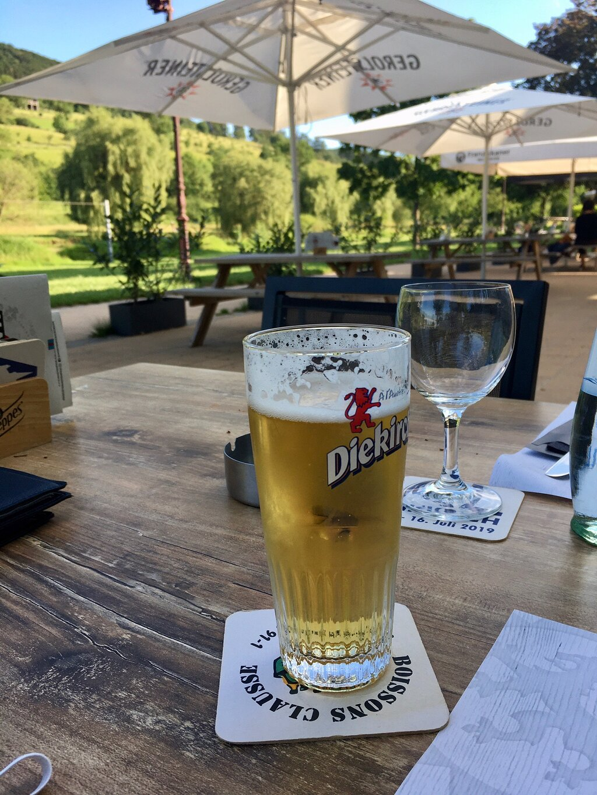
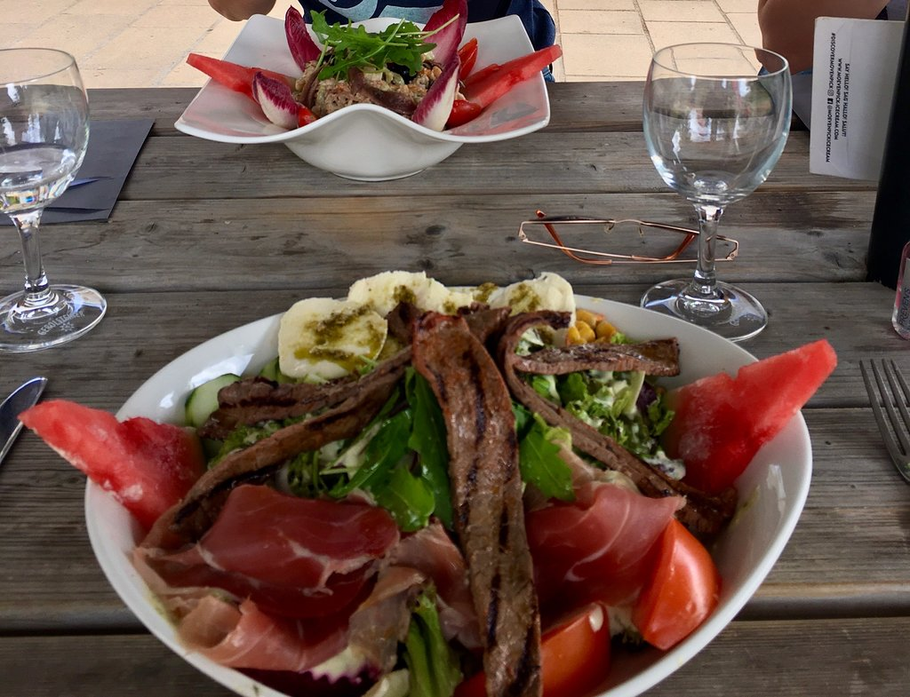
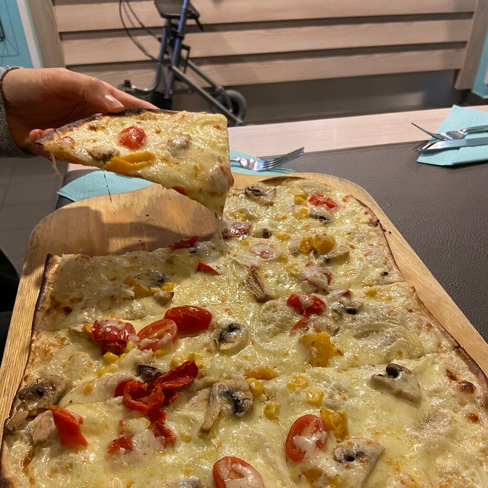

« Au bord de la Sûre, là où Diekirch se baigne depuis toujours. »
Tartes flambées, grandes salades, grillades et pizzas, servies sous les arbres, face à la rivière et à la vallée verte — là où se trouvait l'ancienne piscine en plein air de la ville.

« Al Schwemm » signifie en luxembourgeois « l'ancienne piscine ». La brasserie occupe le site de l'ancien bassin de baignade en plein air de Diekirch, sur les rives de la Sûre — un lieu que des générations ont connu maillot sur le dos, serviette au bras.
Aujourd'hui on y vient toujours pour l'eau, mais autrement : une bière fraîche à l'ombre des grands arbres, une salade généreuse face à la vallée, une partie de pétanque pendant que les enfants courent sur la pelouse.



Une journée entière au bord de la Sûre : on y vient pour manger, mais on reste pour l'après-midi.
Grande terrasse ombragée par les tilleuls, parasols crème et vue directe sur la rivière et la vallée verte.
Une partie entre amis pendant l'apéro, sur le terrain juste à côté des tables.
Location juste à côté et passerelle sur la Sûre : idéal pour les cyclistes et randonneurs de la vallée.
Menu enfants, pelouse, bancs et grands espaces : les petits jouent pendant que l'on savoure.